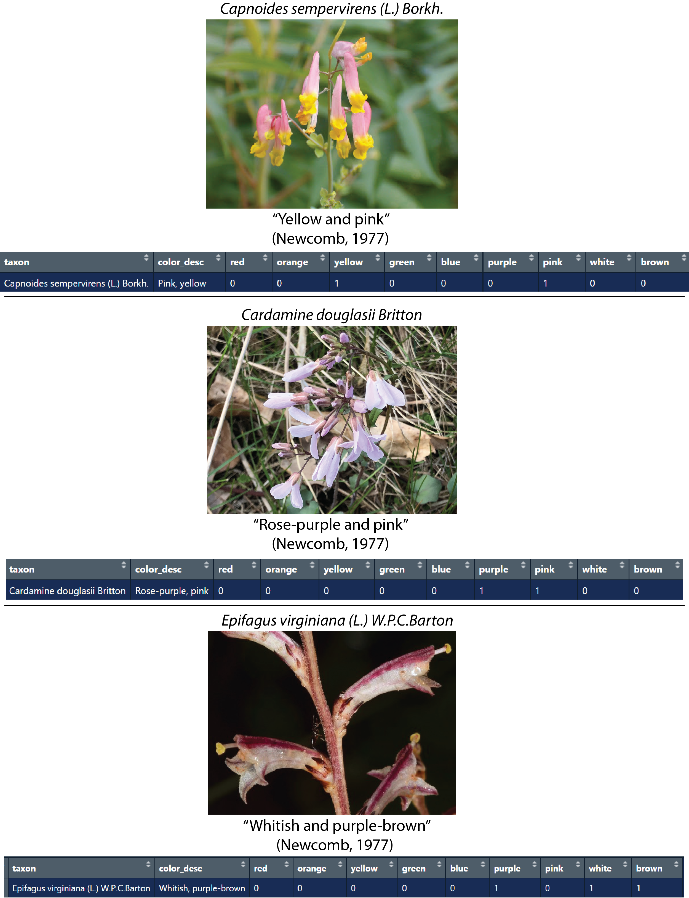
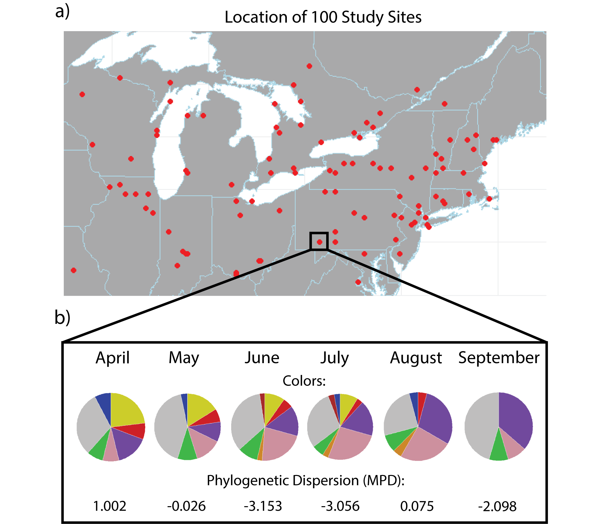
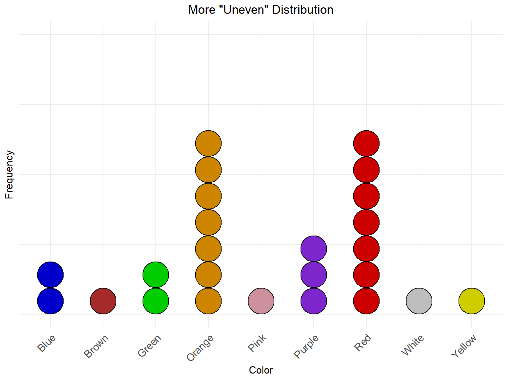
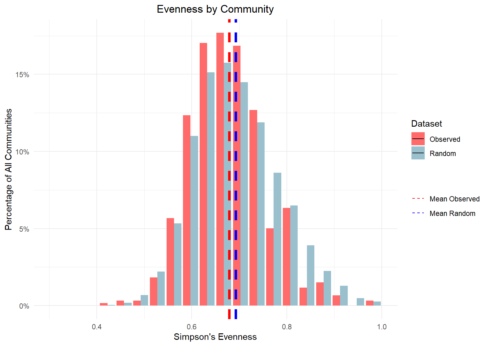
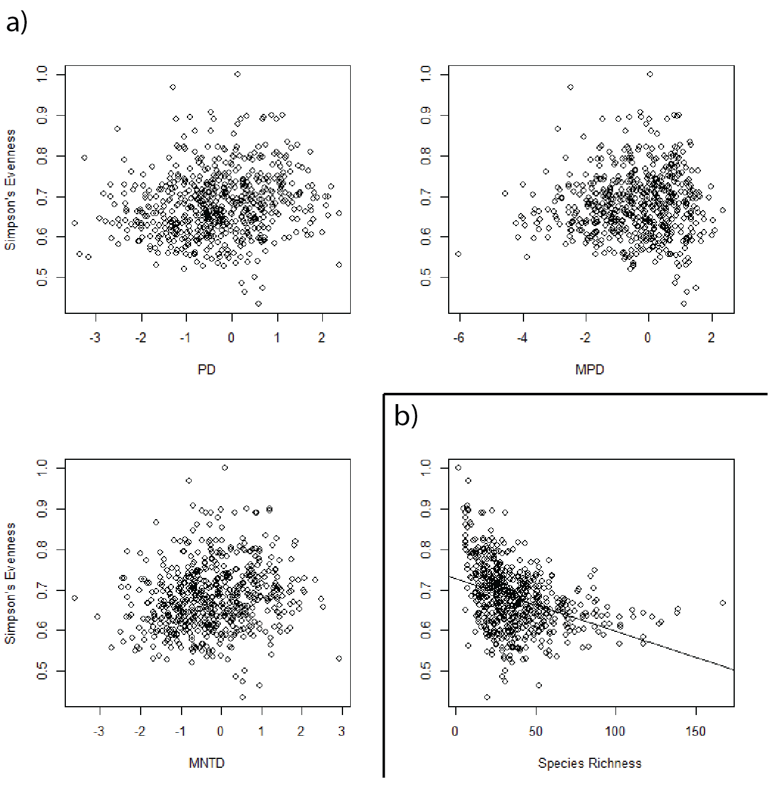

Honors Thesis
**This honors thesis was submit to the University of Michigan for honors recognition, but has not been peer-reviewed and is not considered publication-ready.
Patterns of floral color in communities of common Northeast American wildflowers
Chris Talbot1, Marjorie Weber1
1Department of Ecology and Evolutionary Biology, University of Michigan, 1105 North University Avenue, Ann Arbor, MI 48109-1085, USA.
Open Research Statement
All data were retrieved from public sources, which are cited in-text. All novel code is permanently stored at https://github.com/chris-a-talbot/flower_color_diversity.
Keywords
biodiversity, citizen science, phenology, plant-pollinator interactions, sympatry
Abstract
Floral color is a captivating, complex trait, displaying striking variation across species and plant communities. A range of factors, including biotic interactions, abiotic conditions, and phylogenetic relationships is hypothesized to contribute to emergent patterns of floral color across plant communities, potentially generating overdispersed, underdispersed, or random patterns of floral color within communities. However, the generalizability of observed floral color patterns across communities remains uninvestigated for many floras. Here, we zoom in on the North American Eastern Wildflowers to ask: 1) Are species with similar colors more or less likely to co-occur in time and/or space? 2) Does the relationship between floral color and co-occurrence differ based on species relatedness? We assembled a large dataset of 1,096 species of North American flowering plants, and gathered data on floral color, phenology, distribution, and phylogenetic relationships. We selected 100 well-sampled 10 square kilometer communities and calculated metrics of community evenness in floral color categories and community phylogenetic dispersion. We found that overall, across North American Eastern wildflower communities, wildflowers are significantly more similar in color than expected by chance. However, contrary to hypotheses, the degree of over/underdispersion varied across communities, and was not not correlated with the phylogenetic over- or underdispersion of species in the community. Together, these results indicate that at the broad scale, patterns of color in wildflower communities of Northeast America are consistent with scenarios in which factors such as phylogenetic convergence filtering, and dominant pollinator preference shape emergent patterns of floral color across the landscape.
Introduction
Flowering plants display a striking amount of variation in floral color, ranging from inconspicuous greens and browns, to eye-catching reds, blues, and yellows. The diversity in floral color exhibited across the globe has led to its use as a study system for evolutionary and ecological questions, including studies of adaptation, speciation, and evolutionary developmental biology (e.g., Clegg & Durbin, 2000; Sobel & Stresfield, 2013; Erickson & Pessoa, 2022). However, despite the popularity of floral color in public and scientific arenas, the patterns of color composition across large-scale flowering plant communities remains understudied for many floras. Here, we examine the spatial distribution of broad floral colors in Northeast American flowering plants.
Several hypotheses attempt to explain the distribution of floral colors across a landscape. On the one hand, we may expect biotic factors to filter or select for highly divergent floral communities, whereby species in a given community have more dissimilar floral colors than expected by chance. Pollinators in particular are known to exhibit selective pressure for divergent floral colors. Innate and learned pollinator color preferences generate divergent pollinator-mediated selection on floral color and may result in overdispersion for floral color in communities (Weiss & Papaj, 2003; Reverté et al., 2016; Muñoz-Galicia et al., 2021; Trunschke et al., 2021). Pollinator constancy, the preference of pollinators to repeatedly select flowers of a select few species or morphs, may contribute to divergent floral color within communities by incentivizing unique floral colors that attract pollinator specialists (Grossenbacher & Whittall, 2014; Erickson & Pessoa, 2022).
Alternatively, rather than divergence, several hypotheses suggest that floral color at the community scale should display convergence or underdispersion, whereby species in the same place tend to share the same color more than expected by chance. Both biotic and abiotic factors could generate similar floral color within a community. First, species within a community are subject to similar abiotic conditions, including temperature, UV irradiance, and precipitation. As such, if abiotic factors play a significant role in shaping floral color, we might expect all flowers within a community to display similar floral colors (Willmer, 2011). For example, darker floral colors have been associated with colder regions, as their dark color may increase warmth within petals, thereby increasing pollinator attraction (Ahmad et al., 2022). Furthermore, Koski and Ashman (2016) found a strong correlation between UV pigmentation and environmental UV irradiance for flowers in the Potentilleae tribe (Rosaceae). Variations in floral pigmentation are also associated with resistance to extreme environments, particularly drought resistance (Warren & Mackenzie, 2001). At a given point in time, communities tend to have a small number of dominant pollinators. If the benefits of appealing to the color preferences of the dominant pollinator can outweigh the effects of any diverging processes, flowers in a community may tend towards the same color – specifically, the preferred color of the dominant pollinator during their blooming period (Kemp et al., 2019; Bergamo et al., 2020). Similarly, if pollinators prefer particular colors, pollinator constancy may counterintuitively incentivize convergent floral color evolution such that species can tap into the pollinators of other, similar species (Erickson & Pessoa, 2022).
Finally, emergent patterns of floral color across communities may be random rather than over- or under-dispersed. Random emergent patterns at the community scale could occur if multiple factors hypothesized to shape the distribution of floral color occur concurrently. Additionally, although the effects of random and neutral processes on floral color require further investigation, it is not unreasonable to suspect that processes such as genetic drift and gene flow may play a noteworthy role in determining floral color (Sapir et al., 2021), which could also contribute to random patterns at the community scale.
When considering patterns of floral color dispersion in communities, it is also crucial to investigate evolutionary relationships (the phylogenetic dispersion) of species therewithin. Processes that may impact over- or under-dispersion of floral color phenotypes are hypothesized to have varying effects based on the phylogenetic structure of a community. For instance, divergent floral color may prove particularly beneficial to closely related species in a community, as divergence may facilitate increased coexistence for closely related species by avoiding deleterious hybridization and reproductive interference, allowing species to sustainably co-occur in space and time despite otherwise occupying similar areas of niche space (Grossenbacher & Whitall, 2011). Alternatively, sharing floral color to attract a dominant pollinator may benefit distantly related species pairs but not closer relatives. Close relatives may also be expected to share floral color simply due to recent common ancestry (phylogenetic niche conservatism). Other floral traits, such as phenology, have been shown to exhibit high levels of trait conservatism, with congeners tending towards similar trait values (Davies et al., 2013). Thus, we may expect patterns of dispersion of floral colors in communities to shift with the relatedness of plants within that community.
While studies have evaluated patterns of floral color diversity within populations or small communities, to our knowledge, there is limited research on the generalizability of hypothesized patterns of floral color dispersion on a larger, landscape scale. Here, we ask: 1) are wildflowers with similar colors more or less likely to co-flower in space across Northeastern America? And 2) Do patterns of floral color dispersion differ based on species relatedness in communities? To address our questions, we gathered data on 1,096 species of wildflower found across North America. Our dataset includes information on floral color, phenology, range, and range overlap, as well as a phylogeny of our species. We used these data to investigate floral color patterns and relationships between floral color and relatedness.
Methods
Species Selection & Phenotyping
We phenotyped the floral color of species using Newcomb’s Wildflower Guide, a field guide to wildflowers in Northeast America (hereafter “the field guide”) (Newcomb, 1977). We selected this guide for its categorization of each species into one or more discrete color categories. We standardized species names to the binomial nomenclature used by the Leipzig Catalogue of Vascular Plants (LCVP) using the LCVP and lcvplants packages in R (Freiberg et al., 2020). Standardization of nomenclature created some duplicates in our species list due to the reclassification of subspecies; we removed duplicate species from the data. We also standardized species families using the LCVP.
We identified the nine most common and broad color categories in the field guide - red, orange, yellow, green, blue, purple, pink, white, and brown. We placed each species into one or more of these color categories based on their descriptions in the field guide. Species labeled as red, scarlet, crimson, and maroon are categorized as “red;” purple, lavender, violet, lilac, and indigo species are categorized as “purple;” pink, magenta, and rose species are categorized as “pink;” white and cream species are categorized as “white.”

Figure 1: Species were collected from Newcomb’s Wildflower Guide (Newcomb, 1977); species names were standardized to Leipzig’s Catalogue of Vascular Plants (Freiberg et al., 2020); and species were placed into one or more of nine color categories in R. Each species is stored with binary variables for each color category, with 1 indicating the presence of a given color in the flowers of the species. Three examples are shown, with standardized species name, color description from the field guide, and the format of the consequent data.
Species Occurrences
Occurrence data for each species was collected using the rgbif package (Chamberlain & Boettiger, 2017). Occurrences requested were living specimens only, having been identified after 1960, with coordinate uncertainty less than 10 kilometers, and with a location within the Northeast America region. We further filtered occurrences to ensure accuracy, including removing those with geospatial issues, coordinates in country or continent centroids, coordinates in bodies of water, and/or coordinates with a value of 0. All occurrence filtering steps were completed using detailed, custom download requests to the GBIF API.
Phenology
We collected phenology data for each species from iNaturalist using the rinat package in R (Barve & Hart, 2022). For each species, all observations annotated as having the phenological state of “flowering” were downloaded. Phenological observations ranged in observation year from 2008 to present and are within the extent of our analyses in Northeast America. For our study, we defined Northeast America as the region bounded by 38 and 48 degrees latitude and -97.5 and -62.5 degrees longitude. This region minimizes latitudinal range to reduce inaccuracy associated with latitudinal gradients in phenological timing, while allowing for communities from a range of ecosystems.
From these observations, we gathered the range of months each species was observed in bloom. We removed any months that made up less than 12.5% of the total observations for a species, as these were determined probable outliers or erroneous observations. The 12.5% restriction led to data that most closely matched phenological information from online resources and additional field guides. Methods and best practices for using citizen science phenology data are still in development, so the manual identification of a best threshold given our data was deemed necessary (Barve et al., 2020). Species for which phenological data was not available from iNaturalist were removed from all analyses involving phenology.
Communities
Using phenological data, we grouped species by the months they bloom in our study area. Many species are included in multiple month groups, indicating a species that blooms across multiple months in our study region. For each month, a 10 km2 cell area . raster was generated for all species in bloom in each cell using the speciesRasterFromOccurrences() function in the speciesRaster package (Title, 2017). Presence/absence matrices were generated from each raster for each species, creating a presence/absence matrix of all species flowering during a given month in each 10 km2 community across our study area. A community, for the sake of our analyses, consists of one site during one month. Due to computational constraints and the nature of our site selection (detailed later), analyses were restricted to months for which greater than or equal to 100 species were present in our data across communities, which left 6 months included in our study: April, May, June, July, August, and September.
Site Selection
Due to computational constraints, our analyses were run on 100 well-sampled sites across Northeastern America. We selected sites at random from the above described set of sites containing at least 100 species recorded in our peak flowering month, June. Analyses were performed on a total of 600 communities, spanning the same 100 sites across 6 months.

Figure 2: a) Our occurrence data was restricted to the area of Northeastern America which Newcomb’s Wildflower Guide most closely describes. Red circles indicate the location of one of our 100 selected 10km2 study sites. b) Each site consists of six communities, one for each month used in our analyses. A community is made up of only the species present at that site and in bloom during the specified month. Our data, including the distribution of floral color and phylogenetic dispersion, is calculated for each of 6 months across 100 sites. Colors on pie charts represent the corresponding floral color category, with sections representing the proportion of the community having that floral color. Low phylogenetic dispersion values indicate phylogenetic underdispersion, where species are more closely related than a randomly assembled community of equal species richness; high phylogenetic dispersion values indicate phylogenetic overdispersion, where species are more distantly related than a randomly assembled community of equal species richness.
Floral Color Diversity Analysis
Our wildflower species span nine categories of floral color, with species in at least one, but often multiple, categories. To analyze whether a community tended towards more similar (underdispersed) or dissimilar (overdispersed) floral colors, we considered the evenness of our community across color categories. For communities, we summed the number of flowers in each color category to determine the local distribution of floral colors. We then calculated the evenness of this distribution to determine how floral colors are distributed across available categories. By calculating evenness on raw category membership, rather than a functional trait analysis on a species-by-species basis, we control for the effect of species richness, and isolate only the distribution of a community of flowers throughout color space.
We calculated evenness using Simpson’s Evenness (SE) via the function simpson_e from the abdiv package in R (Bittinger, 2020). SE is calculated as the inverse Simpson index (1/D) divided by the number of occurrences (in this case, the number of colors in the community) – that is, 1/DS. SE ranges from values of 0 to 1. Lower SE values indicate less even distributions, in which flowers are more grouped into particular color categories, consistent with convergent (underdispersed) floral colors. Higher SE values indicate more even distributions, in which flowers in a community are spread across most or all color categories, consistent with divergent (overdispersed) floral colors. We selected SE as our metric for its robustness with respect to uneven distributions of flowers across color categories in the overall dataset. Across all species, the frequency of common colors, e.g. white, are greater by an order of magnitude than the frequency of rarer colors, e.g. orange. As such, an appropriate evenness metric must primarily measure the evenness of distribution across common color categories, without being heavily influenced by rarer categories (Smith & Willson, 1996). To test whether flower color was more or less even than expected at random across communities, we conducted a randomization test. For each community, we generated a null distribution of evenness values by holding species richness constant but selecting random species from our overall species pool. This approach accounts for any artifacts in our data driven solely by differences in species richness across our communities. We repeated this randomization 100 times in each community to generate permutation tests. We tested the difference between our observed and random communities using an ANOVA test and Welch two-sample t-test to determine the significance of the difference between the means of each distribution.


Figure 3: a) In a community with lower evenness – more uneven with respect to floral color – distribution of species across color categories is dominated by a few key colors. This is consistent with patterns of convergent floral color, where species in a community tend towards particular colors. b) In a community with higher evenness – more even with respect to floral color – distribution of species across color categories is relatively even. This is consistent with patterns of divergent floral color, where flowers within a community tend to be distinct from those they co-occur with.
Phylogenetic Diversity Metrics
All species were placed on a phylogeny using the V.PhyloMaker2 package (Jin & Qian, 2022). The phylogeny was created according to the Leipzig Catalogue of Vascular Plants (LCVP) database using the GBOTB.extended.LCVP.tre megatree. This megatree represents each genus as a polytomy.
We calculated phylogenetic dispersion using standardized effect size of phylogenetic diversity (PD), mean pairwise distances (MPD), and mean nearest taxon distances (MNTD) for each of our 600 communities using the picante package in R (Kembel et al., 2010). These metrics offer insight into which communities are more or less phylogenetically diverse than expected from a random draw of species. Each metric offers a measure of the phylogenetic dispersion of the community, with values greater than 0 indicating an overdispersed community, and values less than 0 indicating an underdispersed community.
We tested for correlations between community evenness of our sites and both community species richness and community phylogenetic dispersion (PD, MPD, and MNTD) using linear regression models.
Results
Data Overview
We collected data and assembled a phylogeny for 1,096 wildflower species, spanning 473 genera from 107 families. Of our genera, 268 are represented by a single species. Our most-represented genera include Viola (n=30), Solidago (n=26), and Platanthera (n=17). The most common color categories in our phylogeny are white (n=416) and yellow (n=308), with all other colors being represented by fewer than 300 species. Our least represented color categories were brown (n=15) and orange (n=20).
From iNaturalist, we acquired phenology data for 1,019 of our species. Not surprisingly, the most frequent months for our species to be flowering were throughout late spring and summer, including July (n=595), June (n=530), and August (n=480). Of the species with phenological data available, we acquired occurrence data from GBIF for 961. The number of species in each community was roughly normally distributed (mean=38.46, sd=19.6, min=11, max=102).
Phylogenetic dispersion of each community was measured using the standard effect sizes of phylogenetic diversity (PD), mean pairwise distances (MPD), and mean nearest taxon distances (MNTD). All measures of PD were roughly normally distributed. The standard effect size of phylogenetic diversity had a mean of -0.315 (sd=1.069, min=-3.454, max=2.372). The standard effect size of MPD had a mean of 0.308 (sd=0.97, min=-2.62, max=2.04). The standard effect size of MNTD had a mean of -0.21 (sd=1.015, min=-3.61, max=2.935). Communities ranged greatly from phylogenetically under- to overdispersed according to all metrics, but were normally distributed with means all within +/-0.32 of 0.
Patterns of Floral Color
Simpson’s Evenness for floral color categories across communities was roughly normally distributed (mean=0.679, sd=0.079, min=0.434, max=1). The mean evenness of our observed communities was significantly lower than the mean evenness of our randomized communities (mean=0.692, sd=0.09, min=0.363, max=1), as calculated by ANOVA (df=1, F=12.86, p=0.000366) and a Welch two-sample t-test (df=613.19, t=-4.0196, p=0.00007).

Figure 4: The distribution of observed color evenness in each of our 600 communities (in red), plotted alongside the distribution of our random assemblages, controlling for species richness, consisting of 60,000 simulated communities (in blue). The mean evenness of our observed data is significantly lower than the mean evenness of our null distribution for each community (p=0.000366).
Incorporating Species Relationships
Using linear regression models, we found no significant relationship between phylogenetic dispersion of communities and their color evenness using any of our phylogenetic dispersion metrics (PD, MPD, MNTD). However, color evenness of communities was significantly negatively correlated with species richness (t=-10.02, p < 2e-16), emphasizing the importance of accounting for species richness in our randomization test.

Figure 5: a) No correlation was identified between the evenness of color in our communities and any of our measures of phylogenetic dispersion, including phylogenetic diversity (PD), mean pairwise distance (MPD), or mean nearest taxon distance (MNTD). This indicates that evenness of distribution across color categories in a community is not driven by phylogenetic relationships within that community – surprisingly, this means that communities with many closely related species (low phylogenetic dispersion) do not tend to converge upon particular colors any more than other communities. b) A significant negative correlation was identified between evenness of color in our communities and the species richness of those communities. This is surprising, as it indicates flowers do not tend to fill less-occupied color categories, but rather, converge towards more dominant color categories as species richness increases.
Discussion
Floral color is a complex trait, whose development and diversification is hypothesized to be driven by a wide range of biotic and abiotic factors. Understanding how floral color is structured in communities can provide crucial starting points for understanding the ecological drivers of color. Here, we examined the emergent patterns of floral color across common North American Eastern Wildflower communities, testing for patterns consistent with over- and under-dispersion of color relative to random patterns. We found that, across 600 10km2 communities encompassing six months of flowering and 1,096 species, floral color was significantly less evenly distributed than expected from random assemblage of species in communities. However, the phylogenetic dispersion of communities had no significant correlation with the evenness of floral color in that community. This indicates that emergent patterns of floral color diversity at the broad scale are not predictably driven by the phylogenetic relationships of species within a community. These results shed light on the drivers of floral color in communities at this scale, and suggest exciting avenues for future research to understand floral color diversity.
Patterns of Floral Color
We studied 600 communities, spanning the assemblage of flowering species for 6 different months across 100 sites in Northeastern America. By evaluating the evenness of distribution of flowering species across broad color categories, we sought to identify whether communities were more or less diverse in floral color than expected by chance. We found that observed floral color evenness was significantly lower than expected by chance across communities. This result indicates that, in our study region, co-occurring wildflowers tend towards more similar colors than predicted by random assemblages. This pattern is consistent with hypothesized processes producing convergent floral color within communities. Appealing to the dominant pollinator in a given season, as well as appealing to pollinators with existing floral color preferences (pollinator constancy), may promote the co-occurrence of similar floral colors (Kemp et al., 2019; Bergamo et al., 2020; Erickson & Pessoa, 2021). Our findings suggest that convergent processes are outweighing the effects of any processes that promote divergence or overdispersion of floral colors (e.g., to reduce competition for pollinators and avoid deleterious hybridizations, Grossenbacher & Whittall, 2014; Erickson & Pessoa, 2022). Abiotic conditions, including climate and soil, may also explain how wildflower communities overcome competing biotic pressures to display convergent floral colors. The impacts of abiotic factors, such as climate and soil, on floral color is an open area of research with much work to do; further research into this area will help elucidate the role of these pressures in generating emergent patterns of floral color across landscapes (Willmer, 2011). In particular, experiments testing for evidence of similar flower colors impacting plant success in communities will be necessary to link these broad scale patterns with hypothesized processes.
We also identified a negative relationship between floral color evenness and species richness across communities. This negative pattern is surprising, as evenness might be expected to increase with increasing species richness; this pattern is in disagreement with Fox’s Assembly Rule, which suggests that emptier categories should be filled before fuller ones in a community (Fox & Brown 1993). This pattern is consistent with a small number of floral color categories becoming increasingly dominant as species richness increases. Fortunately, our permutation-style tests against a null hypothesis of random assemblage are robust with respect to species richness. Future research may seek to disentangle which, if any, floral colors exhibit dominance in communities, and how floral color is assembled with respect to species richness. This result also lends itself to new hypotheses to explore – for instance, are emergent patterns of floral color driven in part by species richness at a site? Is it more beneficial to have a rare floral color in communities with fewer species, while in communities with more species it is more beneficial to display the locally dominant floral color?
Incorporating Species Relationships
Interestingly, when accounting for phylogenetic relationships within our communities, we saw no significant correlation between a communities’ evenness of distribution across color categories and its phylogenetic over- or underdispersion. Our study included multiple communities showing notable phylogenetic over- and underdispersion, yet the floral color distribution in these sites was no different than communities with less notable phylogenetic relationships. This suggests that phylogenetically structured processes are not a key driver of the floral color similarity patterns observed across communities at this scale.
Our study did not explicitly address flower color evolutionary rates across clades. However, future work with higher phylogenetic resolution could incorporate information on the degree of phylogenetic signal in flower color across subclades. For example, if floral color is phylogenetically conserved, we may expect to see significantly less even floral color distributions in phylogenetically underdispersed communities, as the close relatives in these would be expected to occupy similar color categories. The resolution of our phylogeny, with polytomies for all congeners, limits our ability to make detailed estimates of phylogenetic patterns, and may mask correlations between phylogenetic relationships and color evenness. Future research into floral color and phylogenetic patterns across communities using more detailed data, including higher-resolution phylogenies are a clear next step in this area.
Study Limitations & Future Directions
Our study is, to our knowledge, the first of its kind to assemble such a large dataset of color in Northeastern American wildflowers. Due to the number of species involved in our study, many aspects of our data have room for further exploration. Our phenology, phylogeny, and color data could all be improved by approaches to using citizen science, including the creation of novel methods to acquire wildflower color data from citizen science imagery (Barve et al., 2020). By combining our methods with higher quality data on wildflower traits, we may be able to further strengthen our understanding of the drivers of floral color diversity.
Further, while the average evenness of color in our wildflower communities is significantly lower than expected by chance, additional analyses and more data may reveal other emergent patterns of floral color. We were limited by computational power, but future research should encompass more than 100 spatial communities across the north east. Additionally it will be important to account for spatial and temporal non-independence of sites in future work. Such research may uncover other patterns, including convergent mechanisms discussed above, but also including random ones such as drift, and divergent ones such as competition for pollinators. Regardless, this study represents a powerful first step in investigating the emergent patterns of flower color across communities at the broad scale.
Acknowledgements
The authors thank Nate Sanders for helpful insight on methods and analyses; Matthew Hack for guidance on spatial and phylogenetic methods; the Weber Lab for reviews of manuscripts and discussions on methods; and the University of Michigan Undergraduate Research Opportunity Program for continuous support and funding over the course of the study.
References
Ahmad, S., Chen, J., Chen, G.-Z., Huang, J., Zhou, Y., Kai, Z., Lan, S., Liu, Z.-J., & Peng, D. (2022). Why Black Flowers? An Extreme Environment and Molecular Perspective of Black Color Accumulation in the Ornamental and Food Crops. Frontiers in Plant Science, 13, 885176.https://doi.org/10.3389/fpls.2022.885176
Barve, V., & Hart, E. (2022). rinat: Access “iNaturalist” Data Through APIs.https://CRAN.R-project.org/package=rinat
Barve, V. V., Brenskelle, L., Li, D., Stucky, B. J., Barve, N. V., Hantak, M. M., McLean, B. S., Paluh, D. J., Oswald, J. A., Belitz, M. W., Folk, R. A., & Guralnick, R. P. (2020). Methods for broad-scale plant phenology assessments using citizen scientists’ photographs. Applications in Plant Sciences, 8(1), e11315.https://doi.org/10.1002/aps3.11315
Bergamo, P. J., Streher, N. S., Wolowski, M., & Sazima, M. (2020). Pollinator-mediated facilitation is associated with floral abundance, trait similarity and enhanced community-level fitness. Journal of Ecology, 108(4), 1334–1346.https://doi.org/10.1111/1365-2745.13348
Bittinger, K. (2020). abdiv: Alpha and Beta Diversity Measures.https://CRAN.R-project.org/package=abdiv
Chamberlain, S., & Boettiger, C. (2017). R Python, and Ruby clients for GBIF species occurrence data. PeerJ PrePrints.https://doi.org/10.7287/peerj.preprints.3304v1
Clegg, M. T., & Durbin, M. L. (2000). Flower color variation: A model for the experimental study of evolution. Proceedings of the National Academy of Sciences, 97(13), 7016–7023.https://doi.org/10.1073/pnas.97.13.7016
Erickson, M. F., & Pessoa, D. M. A. (2022). Determining factors of flower coloration. Acta Botanica Brasilica, 36.https://doi.org/10.1590/0102-33062021abb0299
Fox, B. J., & Brown, J. H. (1993). Assembly Rules for Functional Groups in North American Desert Rodent Communities. Oikos, 67(2), 358–370.https://doi.org/10.2307/3545483
Freiberg, M., Winter, M., Gentile, A., Zizka, A., Muellner-Riehl, A. N., Weigelt, A., & Wirth, C. (2020). LCVP, The Leipzig catalogue of vascular plants, a new taxonomic reference list for all known vascular plants. bioRxiv, 0, 0.https://doi.org/10.1101/2020.05.08.077149
Grossenbacher, D. L., & Whittall, J. B. (2011). INCREASED FLORAL DIVERGENCE IN SYMPATRIC MONKEYFLOWERS. Evolution, 65(9), 2712–2718.https://doi.org/10.1111/j.1558-5646.2011.01306.x
Jin, Y., & Qian, H. (2022). V.PhyloMaker2: An updated and enlarged R package that can generate very large phylogenies for vascular plants. Plant Diversity, 44(4), 335–339.https://doi.org/10.1016/j.pld.2022.05.005
Kembel, S. W., Cowan, P. D., Helmus, M. R., Cornwell, W. K., Morlon, H., Ackerly, D. D., Blomberg, S. P., & Webb, C. O. (2010). Picante: R tools for integrating phylogenies and ecology. Bioinformatics, 26, 1463–1464.
Kemp, J. E., Bergh, N. G., Soares, M., & Ellis, A. G. (2019). Dominant pollinators drive non-random community assembly and shared flower colour patterns in daisy communities. Annals of Botany, 123(2), 277–288.https://doi.org/10.1093/aob/mcy126
Koski, M. H., & Ashman, T.-L. (2016). Macroevolutionary patterns of ultraviolet floral pigmentation explained by geography and associated bioclimatic factors. New Phytologist, 211(2), 708–718.https://doi.org/10.1111/nph.13921
Muñoz-Galicia, D., Castillo-Guevara, C., & Lara, C. (2021). Innate and learnt color preferences in the common green-eyed white butterfly (Leptophobia aripa): Experimental evidence. PeerJ, 9, e12567.https://doi.org/10.7717/peerj.12567
Newcomb, L. (1977). Newcomb’s Wildflower Guide. Little, Brown and Company.
Pebesma, E. (2018). Simple Features for R: Standardized Support for Spatial Vector Data. The R Journal, 10(1), 439–446.https://doi.org/10.32614/RJ-2018-009
Rabosky, A. D., Cox, C., Rabosky, D., Title, P., Holmes, I., Feldman, A., & McGuire, J. (2016). Coral snakes predict the evolution of mimicry across New World snakes. Nature Communications, 7, 11484.https://doi.org/10.1038/ncomms11484
Reverté, S., Retana, J., Gómez, J. M., & Bosch, J. (2016). Pollinators show flower colour preferences but flowers with similar colours do not attract similar pollinators. Annals of Botany, 118(2), 249–257.https://doi.org/10.1093/aob/mcw103
Sapir, Y., Gallagher, M. K., & Senden, E. (2021). What Maintains Flower Colour Variation within Populations? Trends in Ecology & Evolution, 36(6), 507–519.https://doi.org/10.1016/j.tree.2021.01.011
Smith, B., & Wilson, J. B. (1996). A Consumer’s Guide to Evenness Indices. Oikos, 76(1), 70–82.https://doi.org/10.2307/3545749
Sobel, J. M., & Streisfeld, M. A. (2013). Flower color as a model system for studies of plant evo-devo. Frontiers in Plant Science, 4.https://www.frontiersin.org/journals/plant-science/articles/10.3389/fpls.2013.00321
Title, P. (2017). speciesRaster: Generation of SpeciesRaster Object and Calculation of Morphological and Phylogenetic Metrics.
Trunschke, J., Lunau, K., Pyke, G. H., Ren, Z.-X., & Wang, H. (2021). Flower Color Evolution and the Evidence of Pollinator-Mediated Selection. Frontiers in Plant Science, 12.https://www.frontiersin.org/journals/plant-science/articles/10.3389/fpls.2021.617851
Warren, J., & Mackenzie, S. (2001). Why are all colour combinations not equally represented as flower-colour polymorphisms? New Phytologist, 151(1), 237–241.https://doi.org/10.1046/j.1469-8137.2001.00159.x
Weiss, M. R., & Papaj, D. R. (2003). Colour learning in two behavioural contexts: How much can a butterfly keep in mind? Animal Behaviour, 65(3), 425–434.https://doi.org/10.1006/anbe.2003.2084
Willmer, P. (2011). Pollination and Floral Ecology. In Pollination and Floral Ecology. Princeton University Press.https://doi.org/10.1515/9781400838943